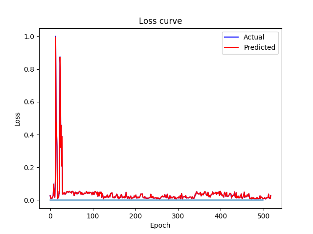
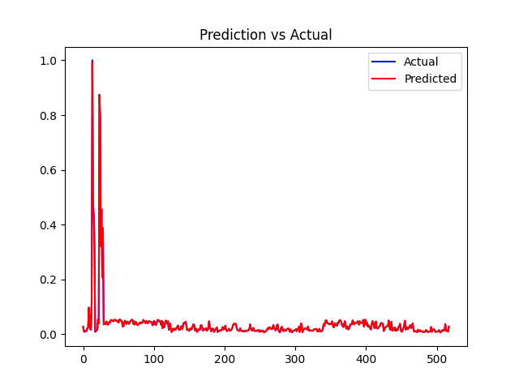

{% extends 'base.html' %}
<!--Bootstrap-Flask 提供的表单渲染宏通过内置的 bootstrap/form.html 模板导入， -->
{% from 'bootstrap/form.html' import render_form %} {% block content %}
    <div style="width: 600px; margin: auto; display: flex; flex-direction: column; align-items: center;">
        <div id="gallery">
            
            
            
            <select id="imgSelect">
                <option value="img1">日度数据展示</option>
                <option value="img2">月度数据展示</option>
                <option value="img3">年度数据展示</option>
            </select>
        </div>
        <div style="height: 10px;"></div>
        <div style="display: flex;">
            
            
        </div>
    </div>

    <script>
        // 图片默认隐藏,除了图片1
        let imgs = document.querySelectorAll('#gallery img')
        let visibleImg = 'img1'

        for (let i = 0; i < imgs.length; i++) {
            if (imgs[i].id != visibleImg) {
                imgs[i].style.display = 'none'
            }
        }

        let select = document.querySelector('#gallery #imgSelect')
        select.addEventListener('change', function () {
            let prevVisibleImg = visibleImg
            visibleImg = this.value
            document.querySelector('#gallery #' + prevVisibleImg).style.display = 'none'
            document.querySelector('#gallery #' + visibleImg).style.display = 'block'
        })
    </script>
{% endblock %}